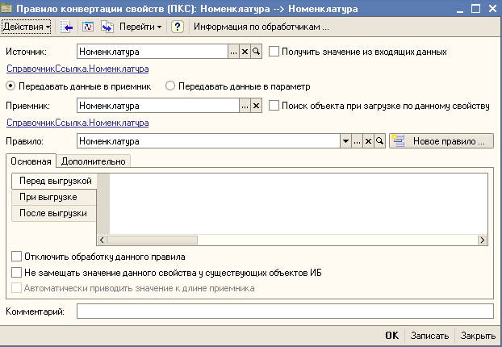

Как мы уже знаем, правила конвертации свойств используются для сопоставления реквизитов обменивающихся объектов. Естественно, что в правиле конвертации задаются реквизит из объекта источника и объекта приемника.

Кроме того, для ссылочных реквизитов можно указать правило конвертации объектов, которое необходимо применить для переноса значения данного реквизита.
Поиск объекта при загрузке по данному свойству - флаг определяющий нужно ли по данному свойству производить поиск объектов в информационной базе приемнике. Если сразу у нескольких реквизитов установлено свойство поиска данных, то условия поиска объединяются по "И". В этом случае правило поиска звучит следующим образом: Найти объект у которых все реквизиты поиска совпадают с источником. (Внимание Поиск по уникальному идентификатору, который может быть установлен у правила конвертации объектов более приоритетный, то есть если он установлен то поиск будет выполнен по этому идентификатору).
Отключить обработку данного правила - флаг, позволяет отключить обработку данного свойства, не удаляя его из правил конвертации объектов.
Не замещать значение данного свойства у существующих объектов ИБ - флаг, позволяет отключить обработку данного для объектов информационной базы приемника, которые были найдены по уникальному идентификатору или по полям поиска.
Автоматически приводить значение к длине приемника - флаг, позволяет включить автоматическое приведение Номера или Кода справочника соответствующему значению в приемнике по длине. При этом префиксы сохраняются, а числовые части преобразуются под длину поля в приемнике.
ТОЛЬКО ДЛЯ ОБМЕНА V8 - V8
Функционал, позволяющий передавать дополнительные параметры в информационную базу приемник из источника.
Передавать данные в приемник - флаг определяет куда будут помещены данные при загрузке. Непосредственно в найденный для изменения объект.
Передавать данные в параметр - флаг определяет куда будут помещены данные при загрузке. В отдельное соответствие для данного объекта, но не в сам объект. Этот подход удобен когда нужно передать какое либо значение в приемник, но нет реквизита куда нужно его поместить. Впоследствии анализируя дополнительные параметры можно изменить логику заполнения объекта приемника. В правилах необходимо указать имя параметра куда нужно поместить данные. Для табличных частей и наборов движений для каждой строки формируется отдельная структура в которой хранится информация.
Доступ к этим данным возможен в событии правила конвертации объекта "После загрузки". Например, так:
Если ПараметрыОбъекта <> Неопределено тогда
ИмяКонтрагента = ПараметрыОбъекта["ИмяКонтрагента"];
КонецЕсли;
// Например, если нужен доступ к параметрам табличной части с именем "Товары"
Если ПараметрыОбъекта <> Неопределено тогда
ТаблицаПараметровТовары = ПараметрыОбъекта["ТоварыТабличнаяЧасть"];
Если ТаблицаПараметровТовары <> Неопределено Тогда
Для Каждого СтрокаПараметров Из ТаблицаПараметровТовары Цикл
ИмяНоменклатуры = СтрокаПараметров.ИмяНоменклатуры;
КонецЦикла;
КонецЕсли;
КонецЕсли;
Выгружать элементы группы через промежуточный файл - флаг определяет как выгружать объекты данного типа, через промежуточный файл (экономично с точки зрения оперативной памяти) или напрямую через память (оптимально по скорости, но при больших объемах передаваемых данных оперативная память может закончится).
На закладке "Дополнительно" можно редактировать вхождение правила в определенную группу, а так же его описание. Наименование правила формируется автоматически и недоступно для изменения.